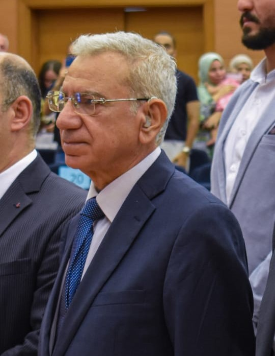
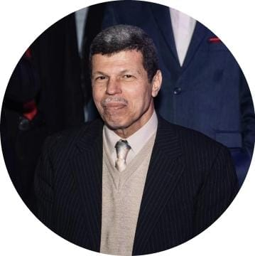
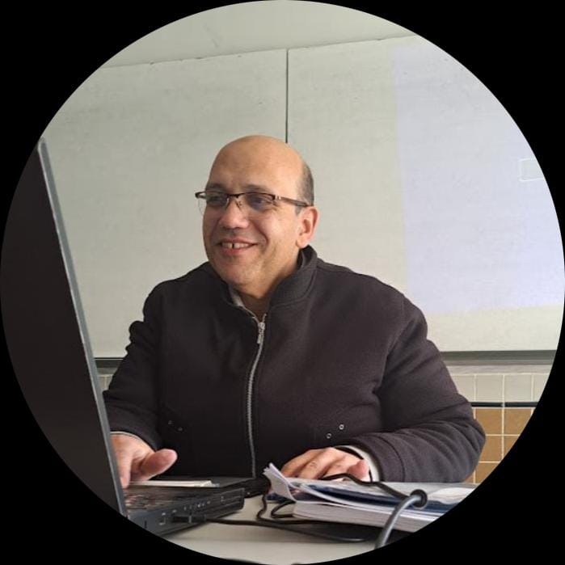
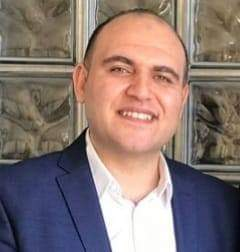
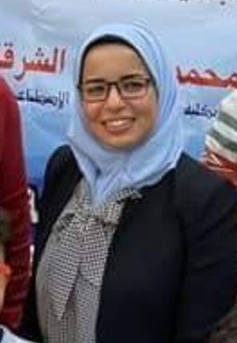
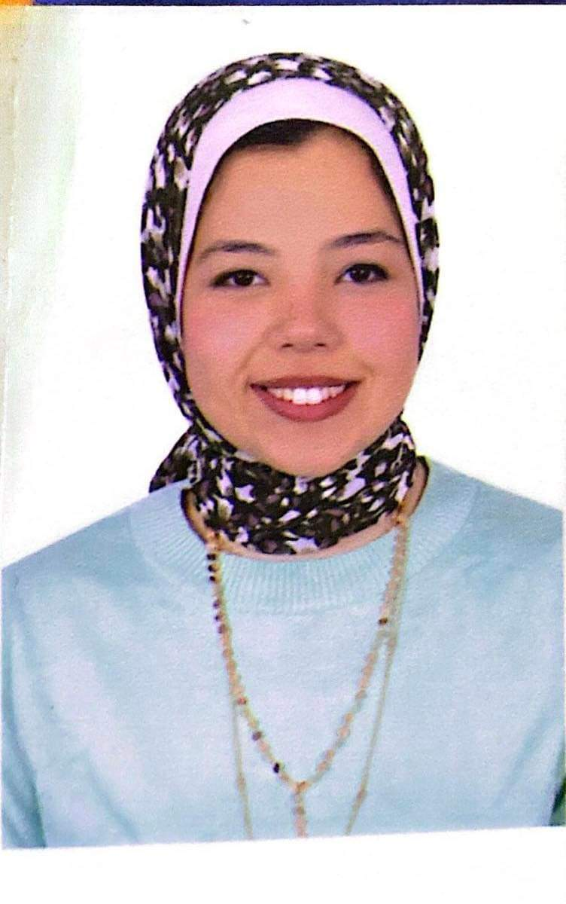
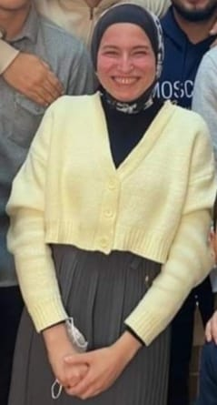

Computer science
About the Department:
The duration of study in the department is four years, divided into eight academic semesters. The department awards a Bachelor’s degree in Computer Science and Information Technology according to the following specializations, with the specialization starting from the fourth year.
two specializations offered by the department:
Computer Science Specialization:
This specialization focuses on the scientific concepts and principles behind the design, development, and implementation of computers, their software, and systems. It also covers how these technologies are used to solve real-world problems. The curriculum includes a wide range of topics such as programming, databases, computer networks, operating systems, artificial intelligence, cybersecurity, and more.Information Technology Specialization:
This specialization is not explicitly mentioned in the provided text, but it typically involves the study of utilizing computer systems and telecommunications to store, retrieve, transmit, and manipulate data. It is often concerned with the practical application of computing to support organizations and provide technological solutions to problems.
Laboratories and Their Capabilities:
The department has 4 computer labs, equipped with 64 computers. These labs are utilized for scientific training related to various academic subjects. The scientific activity includes the department hosting discussions for graduation projects prepared by students. These discussions are attended by a selection of professors and specialized experts from various Egyptian universities, aiming to guide the students and highlight the strengths and weaknesses of the projects for consideration during implementation./* Faculty Members */
Dr/ Hussin Omran
 Acting Head of the Computer Science Department.
Computer Science Lecturer at the Academy.
Dr/ Mohamed El Mahy
 Academic Background: Bachelor’s in Electrical Engineering (Computer Specialization) from the Military Technical College in 1976, a Diploma in Electronics
Engineering from Thomson Company - France in 1978, a Master’s in Systems and Computer Engineering from Al-Azhar Engineering in 1986, and a Ph.D. from
the Royal Military College of Science, Cranfield University, UK in 1994.
Professional Experience: Previous roles include Professor at the Department of Computer Science and Information Technology in 2016 at Akhbar El Yom Academy
in October 6 City, and high-ranking positions at the Center of Scientific and Technological Excellence at the Ministry of Military Production, overseeing postgraduate studies.
Certifications: During his tenure as the head of the Center of Scientific and Technological Excellence at the Ministry of Military Production, the center received
the triple international quality certification (ISO 9001 – Environment – Occupational Health and Safety) from KUV Germany in 2014, valid for three years.
Dr/ Mohamed saeed
 Prior experiences:
Lecturer, Faculty of Engineering, Akhbar El-Yom Academy – September 2011 - Present.
Lecturer, Faculty of Science and Arts, King Saud University – KSA February 2010 – September 2011.
Lecturer, Faculty of Engineering, Akhbar El-Yom Academy – September 1999 - February 2010.
University qualification:
Mathematics Department, Faculty of Science, Helwan University, October 1998-June 1999.
Recitation for Math and Computer Courses: Linear Algebra– Special Functions – Fundamental Programming Languages
Grading problem sets and midterm papers for Math and Computer courses
Dr/ Ahmed Samy
 B.Sc electronics and communication Engineering 2008
M.Sc Engineering Physics (electromagnetic and photonics) faculty of engineering Cairo university 2013
PhD engineering physics (electromagnetic and photonics) faculty of engineering Cairo university 2018
Dr/ Samah mohamed
Mathematics teacher at the academy.
Graduate of Al-Azhar University.
Holder of a Master’s and Ph.D. in Pure Mathematics
We also have a group of the best and most skilled distinguished teaching assistants. We thank them for their efforts, good conduct, and cooperation.
Eng/ Ahmed Alaa
Teaching assistant
Faculty of computer science, akhbar elyoum academy.
Bachelor of computer science, excellent with honors 2021.
* He is one of the best, most competent, and most skilled engineers at the academy. We thank him for his good conduct, constant cooperation, and continuous assistance to the students. He is patient and possesses a wealth of knowledge which he generously shares with everyone. May God reward him well.
Eng/ Mohamed Saber
Teaching assistant
Faculty of computer science, akhbar elyoum academy.
Bachelor of computer science, excellent with honors.
Eng/ Sara
 Academic Qualification: Master’s in Information Systems, “Faculty of Computers and Artificial Intelligence” - Cairo University, 2019
Academic Certificates: Ph.D. registration at Fayoum University
Eng/ Salma Ayman
Teaching assistant
Faculty of computer science, akhbar elyoum academy.
Bachelor of computer science, excellent with honors.
Eng/ Somia Osama
 Assistant Professor of Computer Science.
Academic Qualification: Master of Computer Science, Faculty of Computers and Information Systems - Ain Shams University, 2019